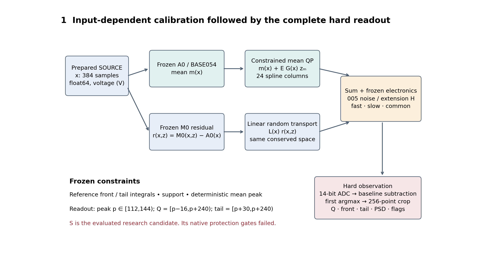
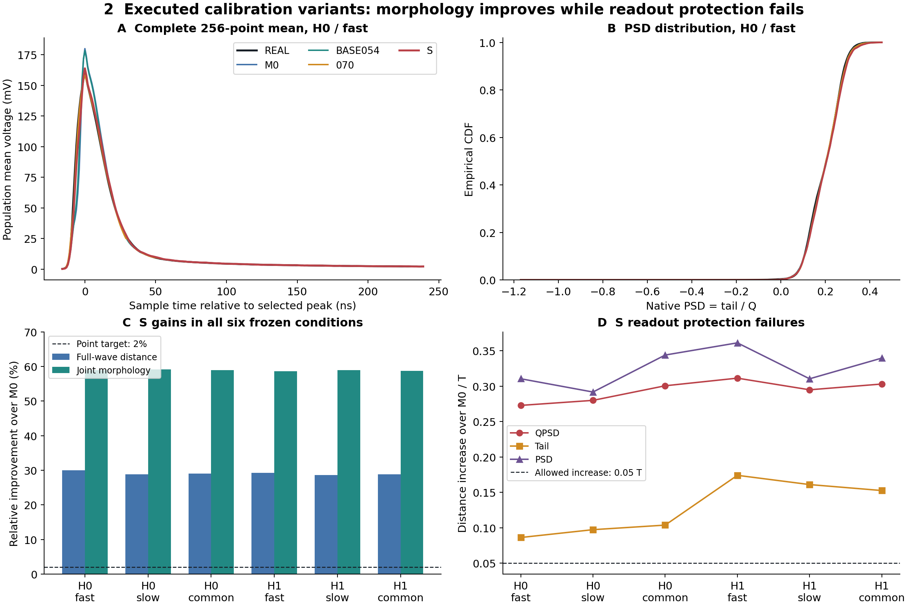
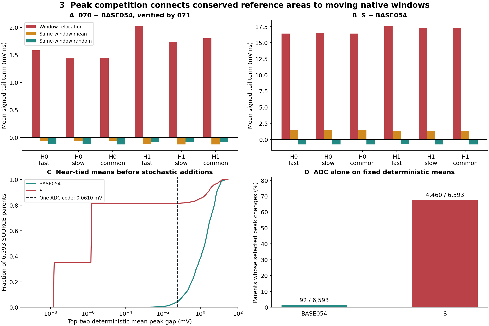
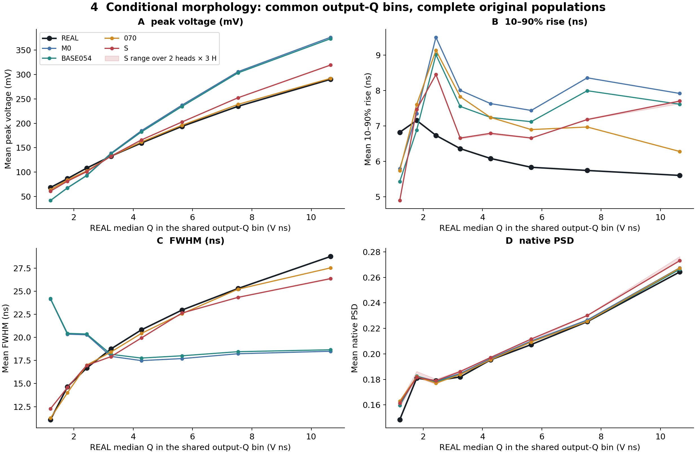
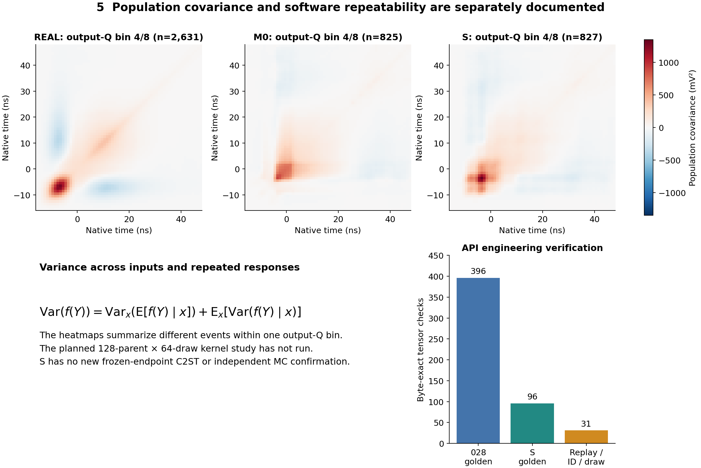
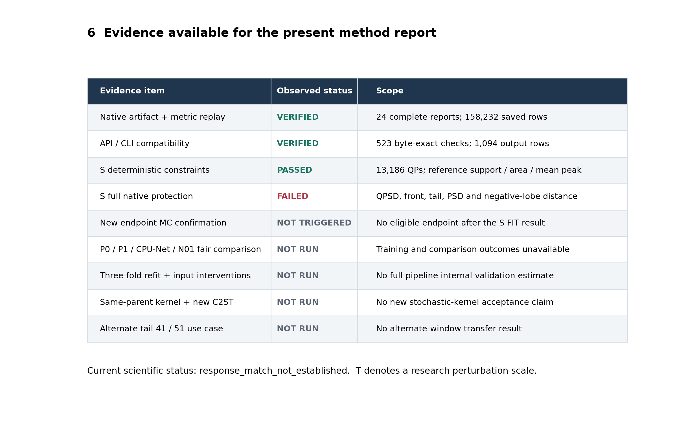

接口验证通过，科学验收未通过。 S 的 wave 改善 28.58–30.01%，joint 改善 58.61–59.12%；六条件均失败 QPSD/front/tail/PSD/负波瓣保护。没有合格最终端点。
中文方法报告 · English manuscript · 接口使用说明 · 相关工作 · 公开交付清单
| 已验证 | 结论 | 边界 |
|---|---|---|
| 原生结果复算 | 24 份完整指标，158,232 行 ADC/wave 精确 | 保存结果复算，没有新候选 |
| 研究 API | 523 项张量检查逐字节一致 | 旧028 CPU；S 与 CLI CUDA |
| 失败机制 | 5,374 行均值峰差低于 1 ADC 码；ADC 单独造成 4,460 行换峰 | 分母均为 6,593；保留原随机/读出定义 |
1 · 方法与硬读出

2 · 已有四变体

3 · 原生 tail 与峰竞争

4 · 条件形态

5 · 人口协方差与软件重放

6 · 证据覆盖

P0/P1/CPU-Net 公平训练、三折全流程留出、同父随机核、新端点 C2ST、输入干预与备用 tail41/51 尚未运行。S+R 未触发，新确认未打开。下一项科学工作需要决定是否更改已失败的 S 约束/目标路线，并登记新的有限设计。